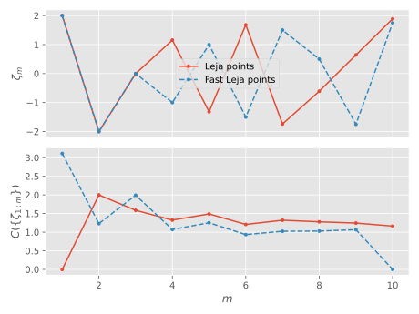

Leja points
A common problem in polynomial interpolation of functions, is that when the number of interpolation points is increased, the interpolation polynomial becomes ill-conditioned (overfitting). It can be shown that interpolation at the roots of the Chebyshev polynomials yields the best approximation, however, it is difficult to generate successively better approximations, since the roots of the Chebyshev polynomial of degree $m$ are not related to those of the polynomial of degree $m-1$.
The Leja points (Leja 1957) $\{\zeta_i\}$ are generated from a set $E \subset \Complex$ such that the next point in the sequence is maximally distant from all previously generated points:
with $w(\zeta)$ being an optional weight function (unity hereinafter). Interpolating a function on the Leja points largely avoids the overfitting problems and performs similarly to Chebyshev interpolation (Reichel 1990), while still allowing for iteratively improved approximation by the addition of more interpolation points.
MatrixPolynomials.jl provides two methods for generating the Leja points, MatrixPolynomials.Leja and MatrixPolynomials.FastLeja. The figure below illustrates the distribution of Leja points using both methods, on the line $[-2,2]$, for the MatrixPolynomials.Leja, an underlying discretization of 1000 points was employed, and 10 Leja points were generated. The lower part of the plot shows the estimation of the capacity, calculated as
For the set $[-2,2]$, the capacity is unity, which is approached for increasing values of $m$.
julia> import MatrixPolynomials: Leja, FastLeja
julia> m = 10
10
julia> a,b = -2,2
(-2, 2)
julia> l = Leja(range(a, stop=b, length=1000), m)
Leja{Float64}([-1.995995995995996, -1.991991991991992, -1.987987987987988, -1.983983983983984, -1.97997997997998, -1.975975975975976, -1.971971971971972, -1.967967967967968, -1.9639639639639639, -1.95995995995996 … 1.95995995995996, 1.9639639639639639, 1.967967967967968, 1.971971971971972, 1.975975975975976, 1.97997997997998, 1.983983983983984, 1.987987987987988, 1.991991991991992, 1.995995995995996], [2.0, -2.0, -0.002002002002002002, 1.155155155155155, -1.3193193193193193, 1.6796796796796796, -1.7397397397397398, -0.6106106106106106, 0.6426426426426426, 1.887887887887888], [0.0, 4.0, 3.9999959919879844, 3.084537289340691, 7.36488275292736, 3.118030920568761, 7.038861956228758, 7.143962613999413, 7.199339458696, 4.549146401863414])
julia> fl = FastLeja(a, b, m)
FastLeja{Float64}([2.0, -2.0, 0.0, -1.0, 1.0, -1.5, 1.5, 0.5, -1.75, 1.75], [-3.111827946268022, -1.5140533447265625, 7.91015625, -1.3255691528320312, -3.0929946899414062, 0.6718902150169015, 1.1896133422851562, 1.2691259616985917, -1.8015846004709601, 2.6076411906e-314], [-1.875, 0.25, -0.5, 1.25, -1.25, 1.625, 0.75, -1.625, 1.875, 1.5e-323], [2, 3, 4, 5, 6, 7, 8, 9, 10, 2], [9, 8, 3, 7, 4, 10, 5, 6, 1, 4570435120])
Reference
MatrixPolynomials.Leja — Type.Leja(S, ζ, ∏ζ)Generate the Leja points ζ from the discretized set S; ∏ζ[i] is the product of the distances of ζ[i] to all preceding points, it can be used to estimate the capacity of the set S.
This is an implementation of the algorithm described in
- Reichel, L. (1990). Newton Interpolation At Leja Points. BIT, 30(2), 332–346. DOI: 10.1007/bf02017352
MatrixPolynomials.Leja — Method.Leja(S, n)Construct a Leja sequence generator from the discretized set S and generate n Leja points.
Base.argmax — Function.argmax(f, itr)Two-argument version of argmax, i.e. returns the index corresponding to the maximum value of f.(itr); taken from JuliaLang/julia#27639
MatrixPolynomials.leja! — Function.leja!(l::Leja, n)Generate n Leja points in the Leja sequence l, i.e. can be used to add more Leja points an already formed sequence. Cannot generate more Leja points than the underlying discretization l.S contains; furthermore, the quality of the Leja points may deteriorate when n approaches length(l.S).
MatrixPolynomials.FastLeja — Type.Leja(ζ, ∏ζ, ζs, ia, ib)Generate the approximate Leja points ζ along a line; ∏ζ[i] is the product of the distances of ζ[i], and ζs are candidate points.
The quality of the fast Leja points for large amounts is not dependent on a preexisting discretization of a set, as is the case for Leja, however fast Leja points are restricted to lying on a line in the complex plane instead.
This is a Julia port of the Matlab algorithm published in
- Baglama, J., Calvetti, D., & Reichel, L. (1998). Fast Leja points. Electron. Trans. Numer. Anal, 7(124-140), 119–120.
MatrixPolynomials.fast_leja! — Function.fast_leja!(fl::FastLeja, n)Generate n fast Leja points, can be used add more fast Leja points to an already formed sequence.
MatrixPolynomials.points — Function.points(l::Leja)Return the Leja points generated so far.
points(fl::FastLeja)Return the fast Leja points generated so far.
Bibliography
Leja, F. (1957). Sur certaines suites liées aux ensembles plans et leur application à la représentation conforme. Annales Polonici Mathematici, 4(1), 8–13. DOI: 10.4064/ap-4-1-8-13
Reichel, L. (1990). Newton Interpolation At Leja Points. BIT, 30(2), 332–346. DOI: 10.1007/bf02017352
Baglama, J., Calvetti, D., & Reichel, L. (1998). Fast Leja points. Electron. Trans. Numer. Anal, 7(124-140), 119–120. URL: https://elibm.org/article/10006464